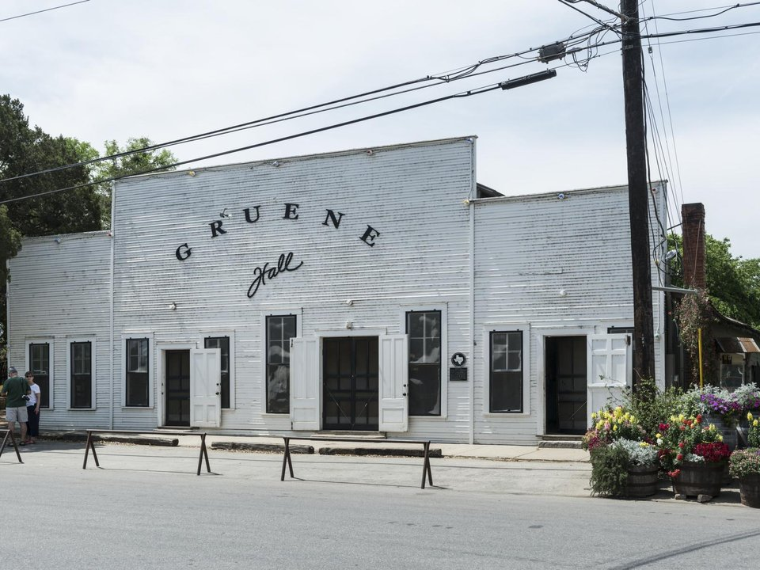

Gruene · Historic inn
Gruene Mansion Inn
Rooms in a restored 1872 mansion and outbuildings above the Guadalupe.
Official details for Gruene Mansion InnDance halls, river tubing and German pastries.
New Braunfels was founded by German settlers in 1845, and the little historic town of Gruene on its edge has Texas’s oldest dance hall, still packed every weekend. Land at New Braunfels National, stay at the Gruene Mansion Inn above the river, have dinner on the decks of the Gristmill, two-step at Gruene Hall, float the cool, spring-fed Comal River in summer, and pick up strudel at Naegelin’s, the oldest bakery in Texas.

Time illustration: direct distance at 150 KTAS plus 15 minutes for departure and arrival, matching the discovery page. Use ForeFlight for your actual flight plan.
Check the weekend weather at both ends → Flight category, your minimums and the crosswind on the best runway.
KBAZ, New Braunfels National, is a towered city airport at 658 feet with runways of 6,503 and 5,364 feet, about 10 minutes from Gruene.
New Braunfels National Airport, New Braunfels, TX
Birds in the vicinity. 24-hour self-serve fuel; full service by call (after hours 830-221-4100, call-out fee). Near San Antonio’s airspace; brief it. No live fuel price is shown.
Texas flying: hot, bumpy summer afternoons with pop-up thunderstorms; spring severe weather (hail, tornadoes and squall lines) from March to June; gusty south winds; and low morning stratus that spreads inland from the Gulf. About 1000 nm from Myrtle Beach: a long cross-country day with two fuel stops. Plan four or more nights, or break the trip with an overnight on the way.
Rates and availability need travel dates. Summer river weekends and Wurstfest book early.
Rooms in a restored 1872 mansion and outbuildings above the Guadalupe.
Official details for Gruene Mansion InnAn 1898 inn downtown with a basement bar.
Official details for Prince Solms InnHotels and river cabins.
Visit New Braunfels for More places to stayPrices and availability for your dates, through our partner Stay22. This is an affiliate link: we may earn a commission at no cost to you. The picks above are never paid.
Reserve weekend dinners.
Dinner in an old cotton gin above the Guadalupe.
Official details for Gristmill River RestaurantStrudel and kolaches at Texas’s oldest bakery, since 1868.
Official details for Naegelin’s BakeryRestaurants in New Braunfels and Gruene.
Visit New Braunfels for More restaurantsCheck Gruene Hall’s calendar for big-name shows.
This prototype links to the local visitor site. It does not yet match events to your travel dates.
Ten days of German food, beer and music.
Wurstfest for WurstfestTubing on the Comal.
Visit New Braunfels for River seasonLive music most nights.
Gruene Hall for Gruene Hall showsCheck the local calendar when choosing a weekend, and confirm dates and tickets with the organizer.
A sample Gruene weekend. This is a long flight; plan four or more nights. No bookings or availability confirmed.
Land at KBAZ mid-morning.
Lunch at the Gristmill.
Walk Gruene, then back to the airport.
Land at KBAZ, subject to weather and your actual flight plan.
Check in and walk Gruene.
Dinner at the Gristmill, then Gruene Hall.
Tube the Comal (summer).
Downtown New Braunfels.
A show at Gruene Hall.
Pastries at Naegelin’s.
Return the car and allow time at the FBO.
Texas afternoons bring heat, bumps and storms; leave in the morning.
Tube the Comal.
Downtown New Braunfels.
Gruene Hall.
This guide is part of a multi-stop flying trip. Set your dates and aircraft, then swap stops to make it your own.
These details make the difference between an appealing list and a usable getaway.
Inn and show tickets first.
About 1,000 nm from Myrtle Beach: a long day or two easy days.
Rivers are crowded on summer weekends.
April to June and September to November.
Picks and links reviewed by WingAway Weekends. Hours, prices, menus and availability change often, so confirm directly with each place before booking. Spotted something out of date, or have a favorite we missed? Email us at hello@wingawayweekends.com.
WingAway Weekends helps you discover the destination. Use ForeFlight and current official aviation information for route, performance, weather, NOTAMs and preflight decisions. Flight planning and PIC responsibility stay with the pilot.